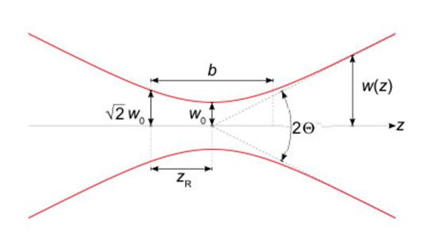
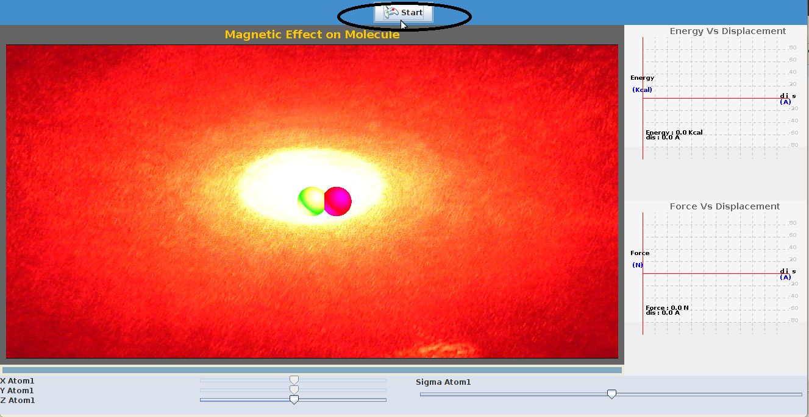
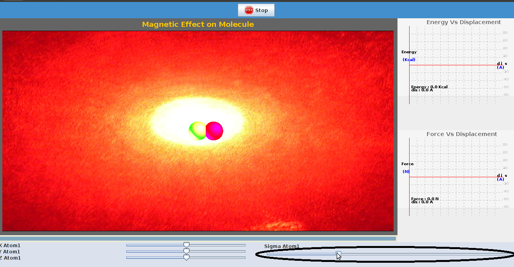
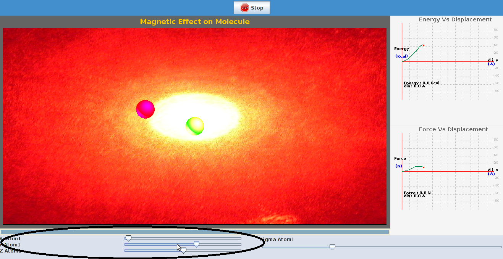

Light is an electromagnetic wave. It consists of oscillating electric and magnetic fields that are perpendicular to each other. Since the constituents of matter (electrons and nuclei) can respond to the electric and magnetic fields, light can exert forces on small objects. The forces exerted by light on matter are called the radiation forces. Under suitable conditions, these radiation forces can be used to trap micron-sized objects, such as latex beads. The principle of localization of tiny objects in space using light is called "optical trapping" and it has found many applications in chemistry, physics and biology. This technique is most prominently used in biophysics to manipulate single biomolecules. The "optical trapping" is also used by atomic physicists to trap individual molecules and atoms.
In this experiment, we will learn how the radiation forces are used to trap tiny objects.

The narrowest point of the focused beam, known as the beam waist, contains a very strong electric field gradient. It turns out that dielectric particles are attracted along the gradient to the region of strongest electric field, which is the center of the beam. The laser light also tends to apply a force on particles in the beam along the direction of beam propagation. It is easy to understand why if one considers light to be a group of particles, each impinging on the tiny dielectric particle in its path. This is known as the scattering force and results in the particle being displaced slightly downstream from the exact position of the beam waist. Most optical traps operate with a Gaussian beam (TEM00 mode) profile intensity. In this case, if the particle is displaced from the center of the beam, it would experience a net force towards the center of the trap. This is because of the fact that more intense beams impart a larger momentum change towards the center of the trap than less intense beams, which impart a smaller momentum change away from the trap center. The net momentum change, or force, returns the particle to the trap center. For a Gaussian beam, the complex electric field amplitude is given by
E(r,z)=E0 ω0/ω(z) * exp(r2/ω2(z)) *exp(-ikz-ikR2/2R(z)+iς(z))
r=is the radial distance from the center axis of the beam
z = the axial distance from the beam's narrowest point (the "waist")
k=2π/λ is the wave number
E0=|E(0,0)|
ω(z) is the radius at which the field amplitude and intensity drop to 1/e and 1/e2 of their axial values
ω=ω0 is the waist size
R(z) = the radius of curvature of the beam's wavefronts
ς(z) = Gouy phase shift


To examine the force acting on the bead trapped by a laser, and to examine the most stable point on the electromagnetic field.


To perform this experiment there are certain parameters to be initialized and the procedure detailed here can be followed.

| Step1:Click on "start" tab to start the experiment |
|  |
| Step2: Select a suitable value of the spring constant using the sliders provided on the display menu. | |
|  | |
| Step3: Change the position of the bead by varying the x,y,z coordinates using the sliders provided. A plot of force as function of distance is seen on right side. |
|  |